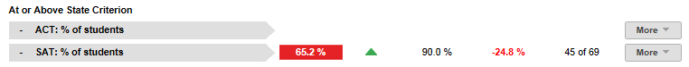
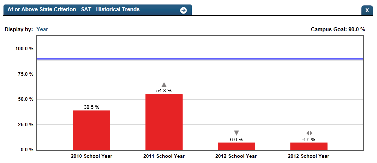

Dashboard Metrics


At or Above State Criterion
Background
Campus Dashboard Metrics
Because of the importance of entrance exams to college acceptance, many school districts across the nation, including Chicago, Charlotte, Dallas and New York, have incorporated metrics on SAT® and ACT® performance into their internal performance management dashboards. In addition, during focus groups conducted with educators, the College Readiness: Entrance Exams metric, as presented in screenshots of the campus dashboard, was considered useful by 95% of those surveyed.
Primary Metric
- SAT®/ACT® At or Above State Criterion: percentage of students at or above the state criterion on the SAT® or ACT®.
Related Metrics
- SAT®/ACT® Taken: percentage of students who have taken either the SAT® or ACT® broken down by grade level.
- PSAT® Performance: percentage of students who have taken the PSAT® at each grade level and whether or not they meet the threshold.
User Interface
Dashboard Example
Figure 1 shows the College Entrance Exam At or Above State Criterion metric as seen on the campus dashboard.

Figure 1 Ed-Fi College Entrance Exams At or Above State Criterion Metric
Status Definition
The Status indicator is determined by campus-specific thresholds (campus goals) which are set at the district level. The Ed-Fi dashboards default thresholds for both SAT and ACT are 90%.
Table 2 lists the status indicators and trend comparisons as seen on the campus dashboard.
Metric Status Indicator | Comparisons | |||
Metric Name | Sub-metric Name | Metric Status Indicator | Trend | Campus Goal (Delta) |
At or Above State Criterion | SAT | Red (Percentage) = If percentage of students at or above the state SAT criterion is less than campus goal Green (Percentage) = If the percentage of students at or above the state criterion is greater than or equal to campus goal | Current year to prior year | The campus goal and the calculated percentage of students at or above the state criterion |
ACT | Red (Percentage) = If percentage of students at or above the state SAT criterion is less than campus goal Green (Percentage) = If the percentage of students at or above the state criterion is greater than or equal to campus goal | Current year to prior year | Campus goal and the calculated percentage of students at or above the state criterion | |
(a) The Value column is the number of students who are at or above the state criterion for the exam out of the total number of students who took the exam.
Trends
The objective of the trend indicator is to increase the percent of students taking college entrance exams.
Trend Indicators for College Entrance Exams At or Above State Criterion | |||
| Up green | Percentage is higher compared to previous time frame; upward trend is favorable | |
| Unchanged | + 5 percentage points | |
| Down red | Percentage is lower compared to previous year; flag indicates unfavorable trend | |
Delta Definition
The Delta column is the absolute value of the difference between the campus metric value (Status column) and the campus goal (Campus Goal column).
Delta Indicators: Objective is to indicate SAT/ACT At or Above State Criterion | |||
Metric Name | Sub-Metric Name | Campus Goal | Delta |
At or above state criterion | ACT | Set campus goal | Red (Percentage) = if the calculated percentage of students at or above the state criterion is less than the campus goal Black (Percentage) = if the calculated percentage of students at or above the state criterion is greater than or equal to the campus goal |
SAT | Set campus goal | Red (Percentage) = if the calculated percentage of students at or above the state criterion is less than the campus goal Black (Percentage) = if the calculated percentage of students at or above the state criterion is greater than or equal to the campus goal | |
Periodicity
At a minimum, load the data for this metric at least annually, prior to the beginning of the school year. Best practice is to load the data monthly to capture the various test administrations. (SAT, and ACT exams are administered and received by districts several times throughout the year).
Recommended Load Characteristics | |
Calendar | Throughout the school year |
Frequency of data load | Monthly |
Latency | Yearly |
Interchange schema | Interchange-StudentAssessment.xsd |
Tooltips
The standard tool tips for the metric definition, column headers, and help functions display for this metric.
 is ‘No change from the prior period'
is ‘No change from the prior period' is ‘Getting worse from the prior period’
is ‘Getting worse from the prior period’ is 'Getting better from the prior period'
is 'Getting better from the prior period'
Business Rules
The cohort for this metric is students currently enrolled in grades 9 through 12 at the campus at the time of the last data load. Excluded from the cohort are students who
- were previously enrolled, but left or transferred to another campus
- do not match student data due to SSID
- do not have complete transcripts
Data Source
- SAT, and ACT data are made available to the districts periodically as they are administered throughout the year.
- Data for this metric is aggregated from the student data provided by the districts.
- Exclude students from the cohort who are transfer students (late enrollees) without complete transcripts.
- Exclude students from the cohort who do not match student data due to SSID.
SAT
This metric displays the percent of students who have taken the SAT with scores at/above state criterion.
ACT
This metric displays the percent of students who have taken the ACT with scores at/above state criterion.
Computed Values
Table 6 defines how values are calculated for each sub-metric. The result of the calculation displays in the Status column on the campus dashboard.
Metric Values | |
SAT - % of students at or above state criteria | (Number of all current students who have met state criteria for SAT) * 100 / (Number of students who have taken the SAT) |
ACT - % of students at/above state criterion | (Number of current students who have met state criteria for ACT) * 100 / (Number of students who have taken the ACT) |
Data Anomalies
Anomalies
Best practice is to footnote these anomalies:
- the date of the last test assessments in the database displays parenthetically in the title of the metric.
- late enrollees may have taken college readiness tests at their previous school.
- transfer students with an incomplete transcript.
- students that cannot be matched due to SSID.
Implementation Considerations
Student Identity
Maintaining a correct and consistent student identity is at the center of any education data system. Most systems use some sort of unique identifier. However, sometimes this identifier is entered incorrectly or sometimes different systems use different identifiers.
The UDM XML supports the interchange of multiple types of identifiers. The StudentReference is a complex type within the UDM to maintain the referential integrity of the student (that is, ensuring that the data associated with each student is accurately associated with the right student). The complex type of the student reference assists with implementing the accurate matching algorithm to identify a student by utilizing any of the individual attributes (e.g., Student Unique State ID, Student ID, Campus Local ID (with Campus ID), Name and Birth Date). For example, if the Student Unique State ID is unknown, you can find the student’s identity by their Student ID, First Name, Last Name and Birth Date.
Exam Apparent Non-Participation
The PSAT, SAT and ACT scores are administered throughout the year. Students’ non-participation can be detected only to the extent that the district has received and loaded timely test result data from The College Board (PSAT and SAT) and ACT. Information from one district’s coordinator indicate the SAT and ACT deliveries of results were “random” throughout the year. To make the Percentage Completing Exam indicator most effective, it is imperative that the scores be received and loaded in the timeliest manner.
Exam Participation Expectation
Students may take the College Preparatory exams anywhere from 9th through 12th grade and may take them multiple times. The PSAT is typically taken in 9th or 10th grade, whereas the SAT and ACT are typically taken in the 11th and 12th grade. Proper application of the metric requires that the district or campus establish clear expectations for when students should take the PSAT, SAT, and ACT, and if a student has not taken either assessment, at what point an intervention is in order.
This functionality includes displaying this metric by grade and/or limiting the metric cohort to those students in the 10th and 11th grade for PSAT and 11th and 12th grade for SAT and ACT.
Incomplete Transcripts and Missing Exam Scores
Transfer students may have incomplete transcripts that do not show prior PSAT, SAT or ACT participation. Timely acquisition of a transfer student’s transcript is imperative to apply this and other metrics.
Campus Goals
Best practice is to set goals for each campus at the district level. A secure mechanism is required to allow the district to set and maintain those goals.
Aggregate Metric Inclusions and Exclusions of Special Education Students
Each campus's aggregate metrics may include or exclude the special education population, depending on the intended purpose for a specific metric and campus goal.
Drill Downs
Drill Down Views
The dashboards include the option to drill down and see more detail that is associated with a metric. Table 7 lists the drill down views that are recommended for this metric.
| Advanced Analysis | Break down of student test assessment (commended, not commended, met standard, and didn't meet standard) (future implementation) | |
| Historical | Graph of metric values across semesters and years. | |
| Student List | List of students who do not meet the threshold for this metric for the specified period. |
Business Rules
The Historical Graph allows the user to see historical data across multiple timeframes. As time passes, there are many bars to be displayed; therefore, the slider on the bottom allows the user to adjust the number of bars displayed as well as the time period shown. The timeframes for this metric were chosen based on educator feedback.
User Interface
Dashboard Examples
Figure 2 shows historical SAT/ACt at or above state criterion as seen in the campus dashboards.

Figure 2 Ed-Fi Historical SAT/ACT At or Above State Criterion